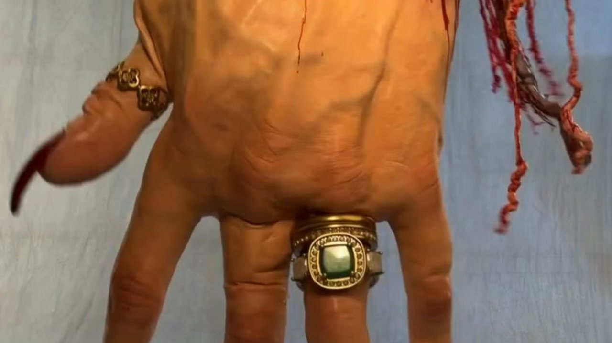
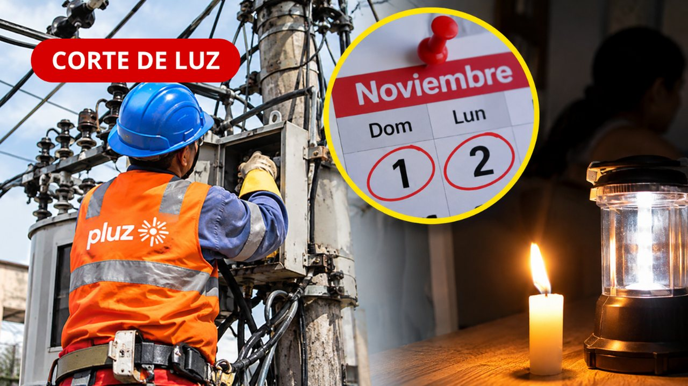
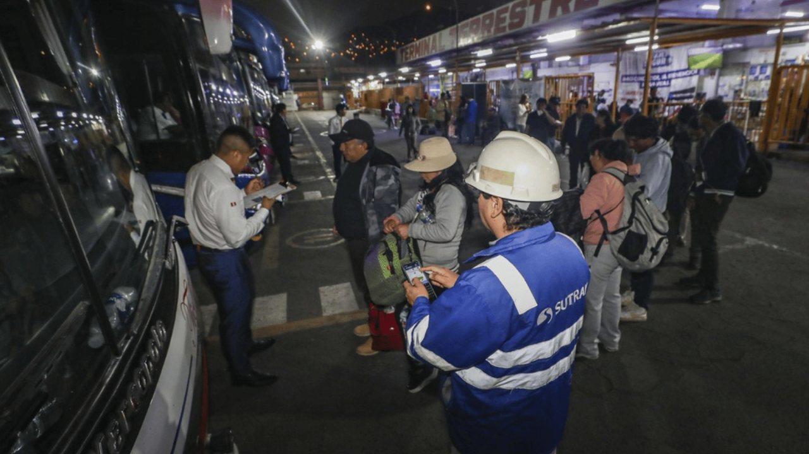
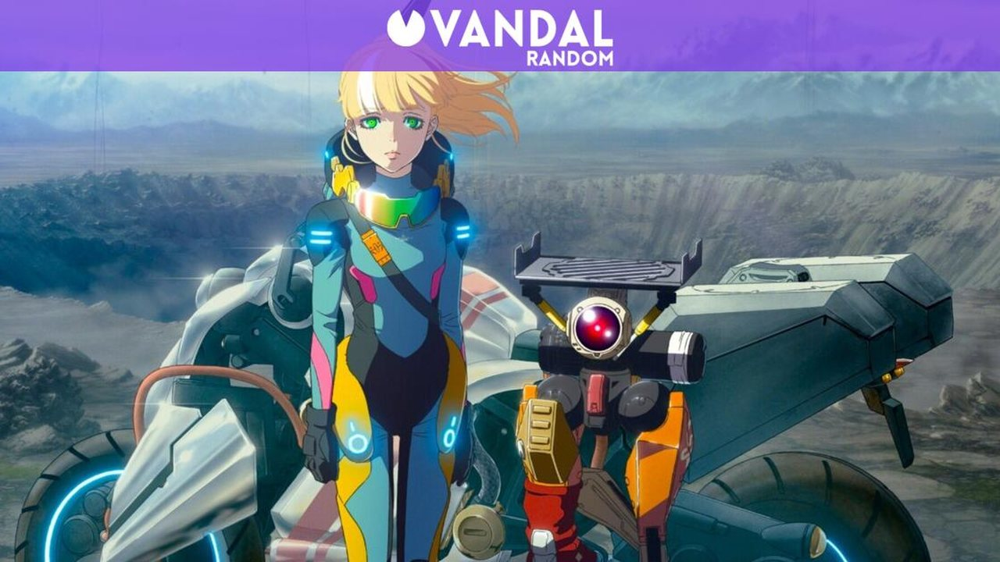

La madre del delantero de Sport Boys y anteriormente de Universitario, Luis Tito Urruti, falleció en Uruguay. Tito Urruti pasó un conmovedor momento tras el duelo entre Universitario y Sport Boys. Luis Urruti jugó un partido muy intenso, destacando nítidamente en el funcionamiento del Sport Boys.








La madre del delantero de Sport Boys y anteriormente de Universitario, Luis Tito Urruti, falleció en Uruguay. Tito Urruti pasó un conmovedor momento tras el duelo entre Universitario y Sport Boys. Luis Urruti jugó un partido muy intenso, destacando nítidamente en el funcionamiento del Sport Boys.
La actividad se llevó a cabo en el auditorio «Guillermo Kaelin de la Fuente» del Hospital Nacional Edgardo Rebagliati Martins y contó con la participación de personal directivo, administrativo y asistencial de dicha red prestacional. Integridad y prevención de riesgos en la gestión pública Durante su exposición, el Abg.
La Policía Nacional del Perú ejecutó un operativo en la Galería Mesa Redonda, situada en la cuadra 4 de la avenida Argentina, en la zona comercial de Las Malvinas, en el Cercado de Lima. Como resultado de la intervención, los agentes decomisaron 230 celulares reportados como robados y 219 chips telefónicos.
La presidenta Keiko Fujimori aseguró este jueves que su Gobierno hará "un buen uso" de las facultades legislativas que el Congreso bicameral les dio en materia de seguridad ciudadana y para afrontar el fenómeno El Niño.
Maido ocupa un nuevo lugar en el ránking de The 50 Best. Todos los restaurantes que logran el primer lugar de la lista The World’s 50 Best Restaurants ingresan a un salón de honor llamado “ The Best of The Best ”.
Las avenidas clave durante la visita del papa León catorce: ¿por dónde pasará y qué zonas de Lima y Callao concentrarán a los fieles? El mural se terminó de instalar el lunes 2 de noviembre en el Callao.
El jueves 5 de noviembre, Keiko Fujimori cumple 100 días de gobierno desde que asumió la presidencia del Perú el pasado 28 de julio.
Río Rímac Entre las zonas expuestas mencionó algunos sectores de la segunda pista de aterrizaje, así como los sistemas eléctricos y de comunicaciones que permiten el funcionamiento del aeropuerto.
La Superintendencia Nacional de Control de Servicios de Seguridad, Armas, Municiones y Explosivos de Uso Civil (Sucamec) destruyó 5 384 armas de fuego ilegales que habían sido incautadas durante operativos policiales en 13 regiones del país. La Sucamec precisó que Lima concentró la mayor cantidad de armas destruidas, con 2 708 unidades.
Cada edición dura menos de dos minutos. En la web tienes el resumen de cada historia y el enlace directo al medio original para leerla completa.
Conoce Olfatecho →